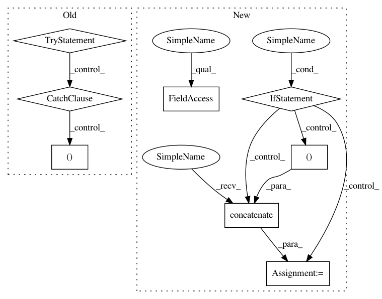

acdb39c2f40fa90a033e895f09d8d02b02e85e9b,dipy/reconst/fwdti.py,,nlls_fit_tensor,#Any#Any#Any#Any#Any#Any#Any#,497
Before Change
sigma))
// The parameters are the evals and the evecs:
try:
evals, evecs = decompose_tensor(
from_lower_triangular(this_tensor[:6]))
fw_params[vox, :3] = evals
fw_params[vox, 3:12] = evecs.ravel()
fw_params[vox, 12] = this_tensor[7]
fw_params[vox, 13] = np.exp(-this_tensor[6])
// If leastsq failed to converge and produced nans, we"ll resort to the
// WLS solution in this voxel:
except np.linalg.LinAlgError:
evals, evecs = decompose_tensor(
from_lower_triangular(start_params[:6]))
fw_params[vox, :3] = evals
fw_params[vox, 3:] = evecs.ravel()
fw_params[vox, 12] = start_params[7]
fw_params[vox, 13] = np.exp(-start_params[6])
fw_params.shape = data.shape[:-1] + (14,)
return fw_params
After Change
f = params[12]
s0 = params[13]
if cholesky:
start_params = np.concatenate((lower_triangular_to_cholesky(dt),
[-np.log(s0),
np.arcsin(2*f - 1) + np.pi/2]),
axis=0)
else:
start_params = np.concatenate((dt, [-np.log(s0), f]), axis=0)
this_tensor, status = opt.leastsq(_nlls_err_func, start_params[:8],
args=(design_matrix,
flat_data[vox],
Diso,
In pattern: SUPERPATTERN
Frequency: 3
Non-data size: 8
Instances
Project Name: nipy/dipy
Commit Name: acdb39c2f40fa90a033e895f09d8d02b02e85e9b
Time: 2016-08-29
Author: rafaelnh21@gmail.com
File Name: dipy/reconst/fwdti.py
Class Name:
Method Name: nlls_fit_tensor
Project Name: nipy/dipy
Commit Name: ede16d13e33e1fa0708e2547abee9a9c7dace1d1
Time: 2016-08-29
Author: rafaelnh21@gmail.com
File Name: dipy/reconst/fwdti.py
Class Name:
Method Name: nlls_fit_tensor
Project Name: nipy/dipy
Commit Name: acdb39c2f40fa90a033e895f09d8d02b02e85e9b
Time: 2016-08-29
Author: rafaelnh21@gmail.com
File Name: dipy/reconst/fwdti.py
Class Name:
Method Name: nlls_fit_tensor
Project Name: biocore/scikit-bio
Commit Name: 9d27c3e2af2e5d4696d9825bc5fcf3e9a6813ccf
Time: 2015-03-24
Author: jai.rideout@gmail.com
File Name: skbio/sequence/_sequence.py
Class Name: Sequence
Method Name: __getitem__